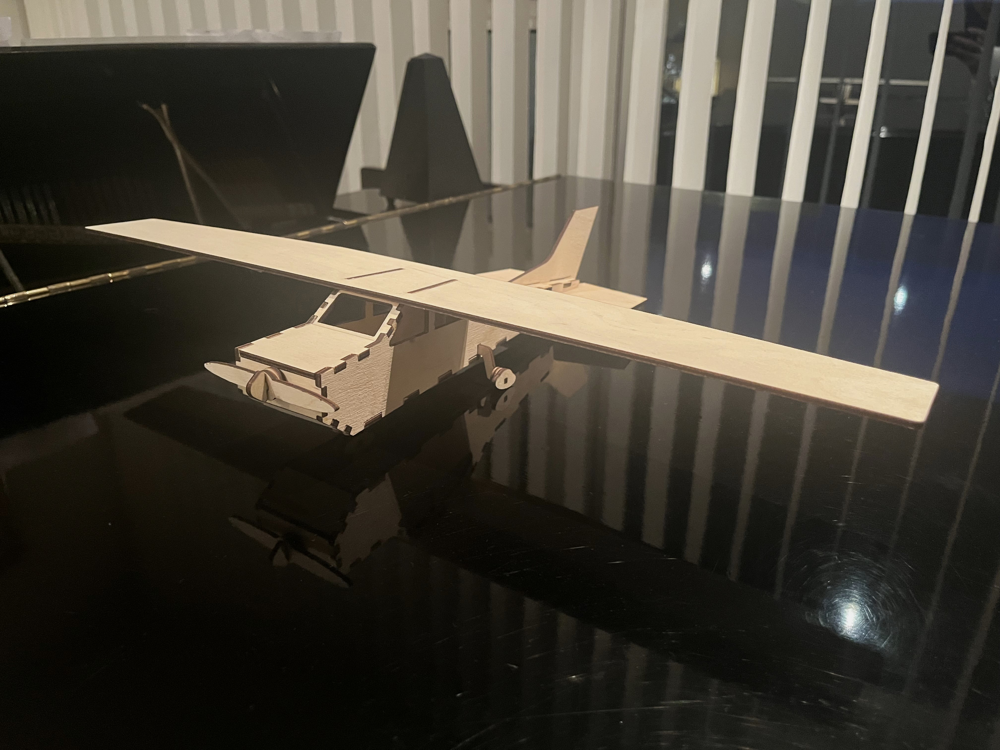

Undirbúningur
Ég byrjaði á því að kynna mér verkefnið í gegnum leiðbeiningar og myndbönd. Þar sem ég hafði áður unnið með CAD hugbúnað ákvað ég að nota Autodesk Fusion 360 fyrir parametrísku hönnunina og Inkscape fyrir vínylskerðinguna. Ég halaði niður þessum forritum og byrjaði að brainstorma hugmyndir.
Ég hafði lengi haft áhuga á flugi og ákvað því að búa til parametríska hönnun byggða á Cessna 172 flugvél. Ég safnaði saman nokkrum myndum á netinu sem ég gat notað sem "canvas" í Fusion 360 til að tryggja nákvæmni í útfærslunni.
Vínylskurður
Ég rek lítið smoothie fyrirtæki, Bylur, og langaði að gera einfaldan límmiða fyrir það. Ég tók logoið okkar og setti það inn í Inkscape, þar sem ég gerði nokkur afrit af því til að skera út nokkra límmiða í einu. Svo get ég set þessa límmiða á ýmsa staði, til dæmis setti ég límiða á skyrtuna mína sem kom mjög vel út.
Ferlið gekk mjög vel, og ég var ánægður með útkomuna.
Parametrísk hönnun
Ég byrjaði á því að teikna grunnform flugvélarinnar í Fusion 360 með myndir af Cessna 172 sem viðmið. Fyrsti parametrinn sem ég skilgreindi var lengd vélarinnar, frá mótor að stéli. Til að einfalda vinnuna bætti ég við öðrum parametra sem var reiknaður sem hlutfall af þessari lengd, sem gerði teikninguna skalanlega og auðveldaði breytingar.
Teikningarferlið tók tíma en var vel þess virði. Ég bjó einnig til parameter fyrir efnisþykkt, sem tryggði að módelið gæti aðlagast mismunandi efnum án þess að breyta grunnteikningunni. Vegna flókinnar lögunar vélarinnar notaði ég loft (loft extrusion) til að móta botn og þak, frekar en að teikna öll form sem sketches. Þetta flýtti fyrir vinnunni og jók nákvæmni, þó ég hafi þurft að endurgera botnplötuna vegna þess að loft extrusion átti erfitt með parametra breytingar, en round 2 af henni gekk vel og virkaði vel með parametrabreytingum.
Þegar módelið var tilbúið, bjó ég til prufukubb til að mæla festingar með mismunandi kerf stillingum. Að lokum flutti ég módelið út sem DXF-skrá og undirbjó hana fyrir laserskurð.
Módel sýnishorn
Útskurður
Ég fór í VR3 og byrjaði á því að skera út vínylinn. Það gekk hratt og örugglega.
Þegar kom að laserskurðinum var félagi minn að gera kerf mælingar, og ég tók þátt í því. Við komumst að því að kerfið væri í kringum 0.37mm. Ég skar fyrst út prófukubbinn minn með þessari stillingu en fann að það var of lítið. Ég prófaði að breyta því í 0.45mm, en það var of stórt. Eftir nokkrar tilraunir endaði ég á 0.43mm, sem reyndist virka best.
Eftir að hafa fínstillt kerfið skar ég út allt módelið og setti það saman. Niðurstaðan var mjög góð, og módelið hélt sér vel saman með geirnegldum festingum.
Áskoranir og lausnir
Ein helsta áskorunin var að stilla parametrana þannig að módelið myndi halda formi sínu án þess að þurfa að breyta teikningunni í hvert sinn. Með því að nota hlutfallslega parametra tókst mér að leysa þetta vandamál.
Annað vesen var að breyta parametrum eftir á án þess að formið brenglaðist, sérstaklega með botnplötuna. Ég þurfti að endurgera hana en eftir nokkrar tilraunir virkaði það vel.
Lokaorð
Þetta verkefni gaf mér dýpri skilning á parametrískri hönnun og laserskurði. Ég lærði mikið um mikilvægi nákvæmra stillinga og hvernig parametrahönnun getur einfaldað vinnu við flóknar teikningar.
